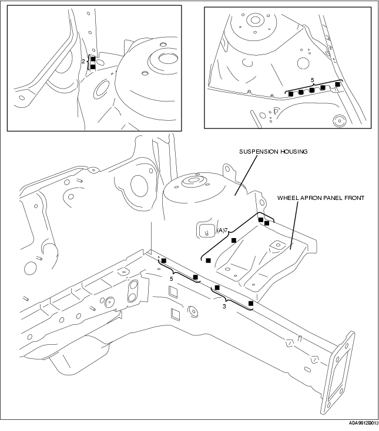

Wheel apron panel assembly installation
LH
1. When installing new parts, position each part so that the section measurement aligns to the body dimension.
2. Drill holes for plug welds before installing new parts.
3. After trial-fitting new parts, make sure the related parts fit properly.
- • When replacing the wheel apron panel front and the suspension housing separately, weld 7 locations indicated by (A).

RH
1. When installing new parts, position each part so that the section measurement aligns to the body dimension.
2. Drill holes for plug welds before installing new parts.
3. After trial-fitting new parts, make sure the related parts fit properly.
4. Install the bolt locations indicated by (A).
5. After installing, fillet weld in location (B).